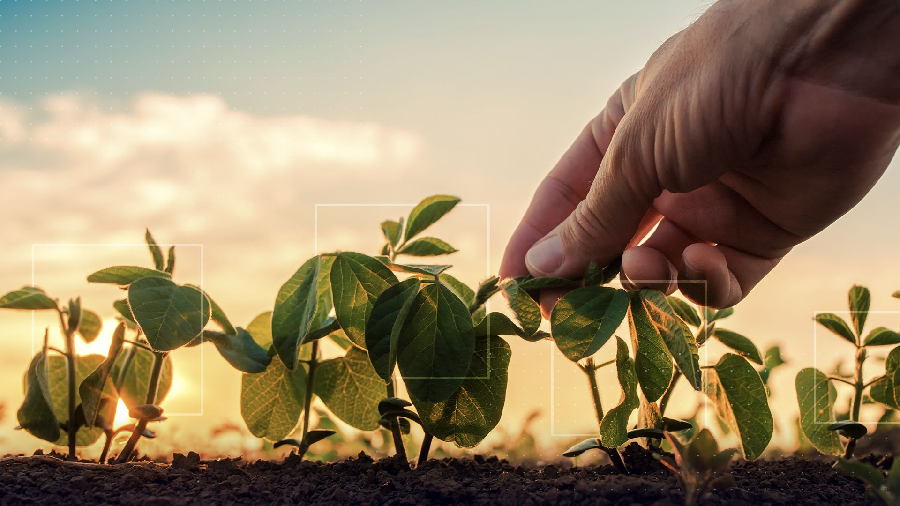
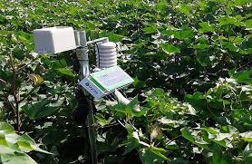
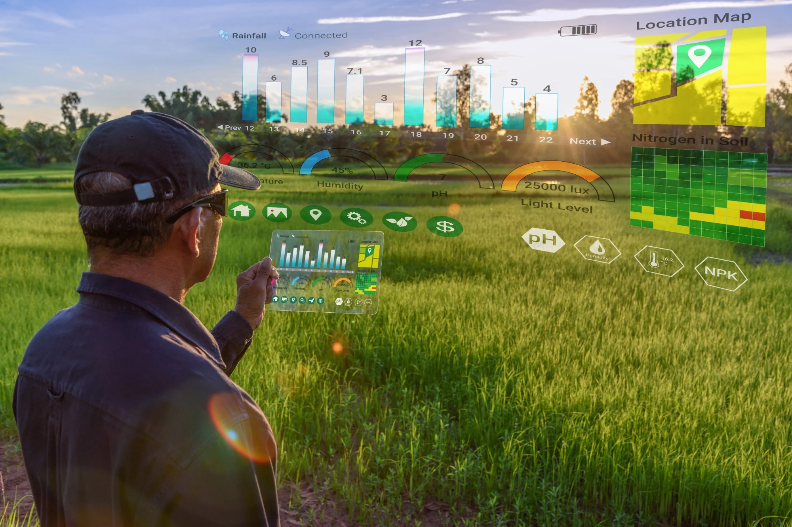
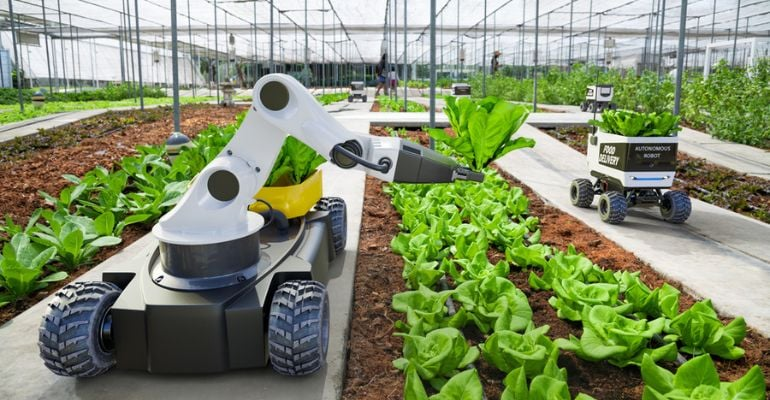

O Futuro da Agricultura é Agora
 A tecnologia está revolucionando o campo, tornando a agricultura mais eficiente, sustentável e produtiva. Explore as diversas ferramentas e inovações que estão transformando a maneira como cultivamos e gerenciamos nossas terras.
Sensores e Monitoramento Preciso
 Sensores instalados no solo e nas plantações coletam dados cruciais sobre umidade, temperatura, nutrientes e outras variáveis. Essas informações permitem um monitoramento preciso das condições das culturas, otimizando a irrigação, a fertilização e a detecção de pragas e doenças.
Drones: Olhos no Céu da Agricultura
.jpeg) Drones equipados com câmeras de alta resolução e sensores multiespectrais oferecem uma visão aérea detalhada das lavouras. Eles podem ser utilizados para mapeamento de áreas, inspeção de plantio, monitoramento do crescimento das culturas, detecção de problemas e até mesmo para a aplicação precisa de defensivos agrícolas.
Drones equipados com câmeras de alta resolução e sensores multiespectrais oferecem uma visão aérea detalhada das lavouras. Eles podem ser utilizados para mapeamento de áreas, inspeção de plantio, monitoramento do crescimento das culturas, detecção de problemas e até mesmo para a aplicação precisa de defensivos agrícolas.
Internet das Coisas (IoT) na Agricultura Inteligente
 A IoT conecta diversos dispositivos e sistemas no campo, como tratores autônomos, sistemas de irrigação inteligentes, sensores climáticos e softwares de gestão agrícola. Essa integração permite a coleta e o compartilhamento de dados em tempo real, possibilitando decisões mais assertivas e a otimização de processos.

Big Data e a Análise Inteligente de Dados Agrícolas
 A grande quantidade de dados coletados pelas diversas tecnologias no campo (sensores, drones, máquinas) é processada e analisada por sistemas de Big Data. Essa análise fornece insights valiosos sobre padrões de produção, previsões de colheita, otimização de recursos e identificação de oportunidades de melhoria.
A grande quantidade de dados coletados pelas diversas tecnologias no campo (sensores, drones, máquinas) é processada e analisada por sistemas de Big Data. Essa análise fornece insights valiosos sobre padrões de produção, previsões de colheita, otimização de recursos e identificação de oportunidades de melhoria.

Automação e Robótica para Maior Eficiência
 A automação de tarefas agrícolas, como plantio, colheita e pulverização, através de máquinas autônomas e robôs, aumenta a eficiência, reduz custos e otimiza o uso de recursos. A robótica também permite a realização de tarefas complexas com maior precisão e em condições adversas.